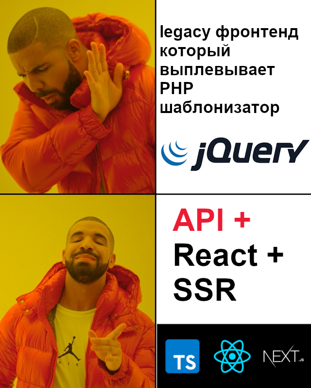
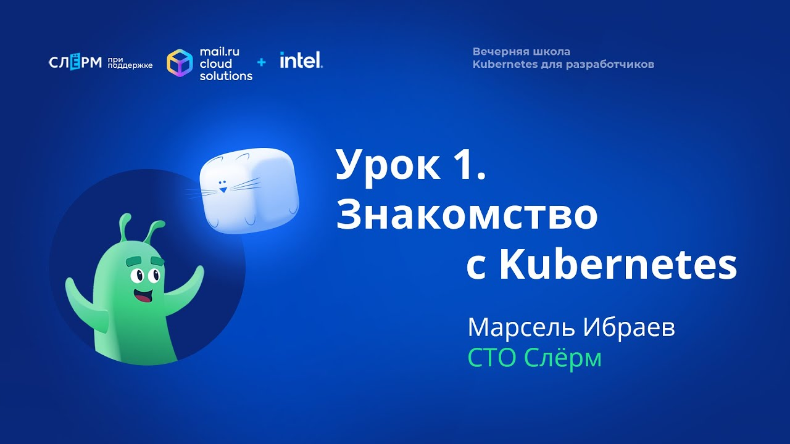

Проектирование распределенного приложения на PHP и kubernetes
Иван Поддубный
Кто я
- 10+ лет в вебе. Прошел путь fullstack, teamlead.
- Пишу на PHP (Laravel/Bitrix), Typescript, Nodejs
- Влюблен в Linux, OpenSource, React.
- Работаю CTO в Вебпрактик (отдел разработки 50+ человек)
- Один из организаторов Ростовского PHP сообщества
В Вебпрактик мы пишем сервисы для корпораций

О чем доклад
- Формата 30 минут не хватит, чтобы познакомить вас полноценно с кубером
- Мы поговорим о том зачем он, и какие предпосылки
- Расскажу вам кейс как мы первый раз внедрядли кубер для заказчика пару лет назад
Я попробую вас убедить что kubernetes + PHP = ❤. Это не сложно и незаменимо в наше время при строительстве не только сложных систем, но и облегчает работу с средними проектами.
Docker
- Кто использует docker у себя локально для рабочего окружения?
- Кто использует docker в production?
Капитанский слайд: для чего нужен docker?
- Мы не зависим от дистрибутива ОС
- Мы не зависим от версий ПО на серверах
- Мы можем легко масштабироваться
- На production точная копия версий ПО как и на локальной машине разработчика
- Легко развернуть точную копию production: stage, test, rc и пр
- Окружение зоопарк: сервисы/микросервисы
- Или как минимум SSR движок
Нельзя просто взять и начать использовать docker в production*

Проблемы docker in production:
- Деплой без даунтайма (это вам не git pull origin master)
- Управление портами
- Мониторинг сложнее
- Архитектурное внедрение (взаимосвязь сервисов service discovery)
- Учитывать недоступность node в кластере
Нормальное управление
docker in production
невозможно
без оркестратора
Оркестратор дает:
Непрерывный деплой
(поднимает второй контейнер, переключает трафик, тушит первый)
Это вам не git pull origin master
Оркестратор дает:
Масштабирование
Скейлим количество контейнеров на необходимые виртуальные/физические машины в т.ч. между дата центрами.
Оркестратор дает:
Отказоустойчивость
Он следит за лимитами контейнеров, не позволяет контейнерам брать больше и поднимает их в случае падения
Оркестратор дает:
Маршрутизация (discovery)
Оркестратор решает вопросы коммуникаций сервисов между друг другом и извне.
Оркестратор дает:
Высокоуровневая абстракция
Мы отвязываемся от уровня физических ресурсов
Оркестратор дает:
ну и конечно управление зоопарком сервисов
Kubernetes — самый популярный в мире оркестратор
Итак я попытался объяснить зачем нам kuber
- Разворачивание кластеров
- Масштабирование
- Отказоустойчивость
- Маршрутизация
- Высокоуровневая абстракция над физическими ресурсами
- Cервисы/микросервисы
Первое PHP приложение в kubernetes
Первое PHP приложение в kubernetes
- Я дам реальный кейс который был перед нами в прошлом году
- Мы с вами попробуем спроектировать отказоустойчивое распределенное приложение на PHP
- Я расскажу вам наши решения и проблемы, и познакомлю с некоторыми нюансами кубера
Первое PHP приложение в kubernetes
Вводные
- У вас devops'ы, которые умеют в кубер
- Рассуждаем с позиции разработчика и архитектора приложения
- У нас нет возможности организовать круглосуточную службу инцденетов, по ночам мы хотим спать.
Требования
- Высокие показатели SLA к отказоустойчивости
- Эффективное использование ресурсов (мы платим за хостинг из суммы контракта)
- Дополнительно мы должны обеспечить отказоустойчивость на уровне ДЦ
- Пикообразные нагрузки. Это сайт крупного федерального онайн мероприятия
- Bitrix
- Очень сжатые сроки (мы думали 4000, оказалось 5000К часов за 3 месяца)

Наши
внутренние
требования
Пару слов о проекте
- Сервис федерального мероприятия
- Целевые показатели: 50К пользователей одновременно.
- Дизайн рисовал Лебедев, мы реализовали логику
- Проект занял целый ряд престижных наград: золотой сайт, серебрянный лучник, событие года
Как обеспечить отказоустойчивость на уровне ДЦ в России?
Как заставить наш сервис подниматься в случае если будут отказы во внерабочее время?
- Костыли на bash
- Kubernetes
А если упадет сам кубер?
- Отказоустойчивость из коробки (3 сервера)
- Kubernetes as service
Поднимаемся на уровень сервисов
Поднимаемся на уровень сервисов
Пакуем контейнеры
1. Разработчик должен уметь описать docker контейнер или составить требования для девопс
- Версия ПО
- Расширения
- Команды
- Переменные окружения и cекреты
Готовим к куберу
- Stateless!
- Отдавать метрики в случае долгоживущих процессов
- healthchecks, liveness/readness prob
А теперь жара: нюансы с упаковкой битрикса
- Нет начальной миграции
- Тяжелое ядро с кучей хлама
- Обновления ядра
- Не stateless
Решение с упаковкой битрикса
- stateless: у нас он как API сервер + из коробки работает с S3
- Ядро в отдельную репу
- Выпиливаем все что связанно с фронтом из ядра
- Выпиливаем лишние модули которые не будут использоваться на проекте
- Делаем автомиграцию на основе стартовой базы
А что делать с обновлениями?
- Ядро под гитом. На stage раскатываем обновление, коммитим ядро, деплоим в контейнер
- С БД сложнее. В Enterprise вы можете запросить патч через ТП. Как альтернатива - вы можете просто нативными инструментами записать SQL diff обновления.
А точно ли вам нужен битрикс?
- Он есть в контракте
- Очень сжатые сроки. Если еще реализовывать кастомную админку - сроки были бы завалены.
- Есть еще ряд фишек битрикса которые хорошо подошли проекту
- Вся остальная логика отлично компенсируется laravel (смотрите предыдущий доклад у нас на канале)
Как сделать отказоустойчивую базу данных?
- Master + N slave
- Cлейвы в разных ДЦ
- Оркестратор БД - мастер выходит из строя - слейв становится мастером
- Берем Yandex Managed MySQL - там все из коробки.
Пригодилось
- В бою реально мастер падал 2 раза и запросы перенаправлялись. Все ок)
Так, а миграции где запускать?
- Job контейнер, который поднимается в рамках CI
- и запускает всем знакомую команду ./artisan migrate
А как быть с планировщиком?
- CronJob
- Планировщик laravel
- А как сделать его отказоустойчивым? Поднять в 2 ноды?)
- Блокировка (mutex) на уровне redis
Так, а redis теперь уже не thirdParty, критический сервис
А что делать с тяжелыми задачами?
- В очереди?
- Laravel умеет в amazon SQS из коробки
- Yandex queue поддерживает SQS совместимый протокол
Много асинхронной логики.
- Nodejs+socket.io
- А если несколько нод?
@todo картинка схемы
Основы архитектуры спроектировали
Дальше ряд работ
- Конфигурируем Kuber
- Настраиваем GitlabCI для сборки контейнеров
- Настраиваем автоскейлинг
- Пушим контейнеры в registry (тоже яндекс)
- Настраиваем локальное окружение
Дальше ряд работ (продолжение)
- Конфигурируем Kuber
- Разработчики пишут хелзчеки, readness / liveness пробы
- Подключаем Elastiс + Kibana для логирования
- Внедряем Sentry как менеджер исключений (фронт и бек)
- Внедряем prometheus + grafana для мониторинга
А что с локальным окружением?
- minicube
- k3s
Как прошло?
- Архитектура выдержала как нагрузочные тесты, так и реальную нагрузку
- Были конечно баги которые оперативно фиксили - kubernetes позволил выпускать огромное количество релизов раскатывая их таким образом что пользователи не замечали этого.
- Огромный финансовый профит за счет облака и кубера: мы платили только за потребляемые ресурсы, ради 2х2 дней фестиваля не пришлось арендовать большой парк серверов.
Нам понравилось
- Внедрили kubernetes еще нескольким крупным корпорациям
- Для небольших проектов используем k3s в проде
С чего вкатиться в kubernetes?
- Kubernetes as a service (yandex/vk/selectel cloud)
- БЕСПЛАТНЫЙ курс Kubernetes для разработчиков на youtube

Спасибо! 🙃
Ваши вопросы
Telegram: @northleshiy